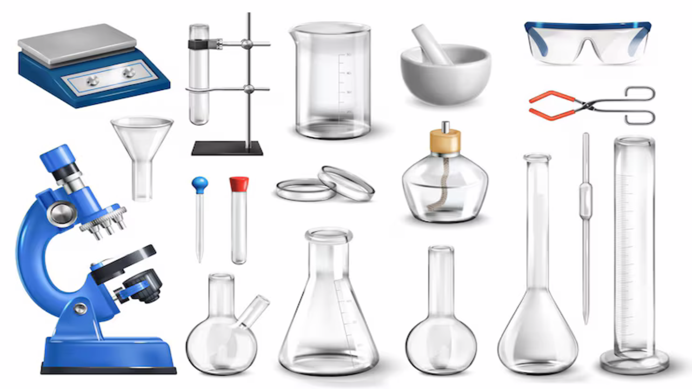
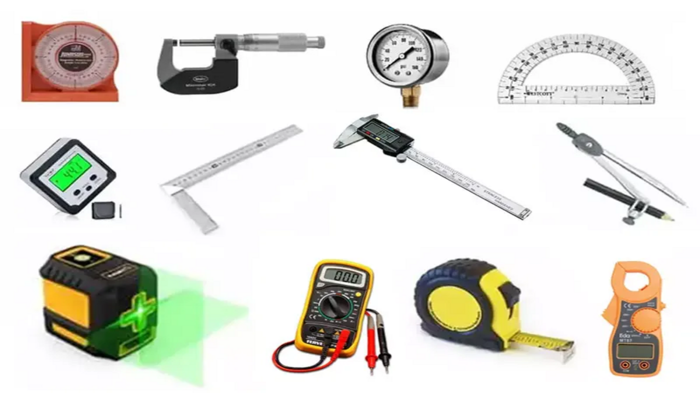

Medida
Medida é o processo de comparar uma grandeza com um padrão estabelecido para determinar seu valor numérico.
Medida é o processo de comparar uma grandeza com um padrão estabelecido para determinar seu valor numérico.
Medida é o processo de determinar o valor de uma grandeza física por meio da comparação com um padrão previamente estabelecido. Ao medir, atribuímos um número e uma unidade a determinada característica, como comprimento, massa, tempo ou temperatura.

Instrumentos científicos são ferramentas usadas para observar, medir e analisar fenômenos, permitindo resultados precisos e confiáveis em experimentos e pesquisas.

Instrumentos de medida são dispositivos usados para determinar valores de grandezas físicas, como comprimento, massa, tempo e temperatura, de forma precisa.
É o grau de proximidade entre valores obtidos em medições repetidas de uma mesma grandeza, realizadas nas mesmas condições. Um instrumento é considerado preciso quando apresenta resultados muito semelhantes entre si, mesmo que não estejam exatamente iguais ao valor real.
Exatidão de medida é o grau de proximidade entre o valor medido e o valor verdadeiro ou aceito como referência de uma grandeza. Um instrumento é considerado exato quando seus resultados estão muito próximos do valor real.